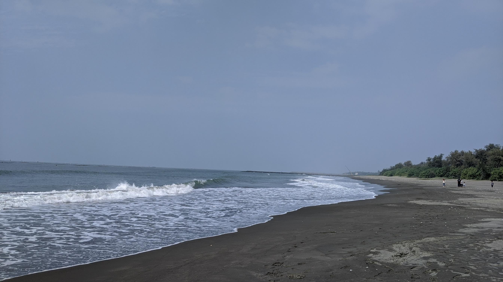
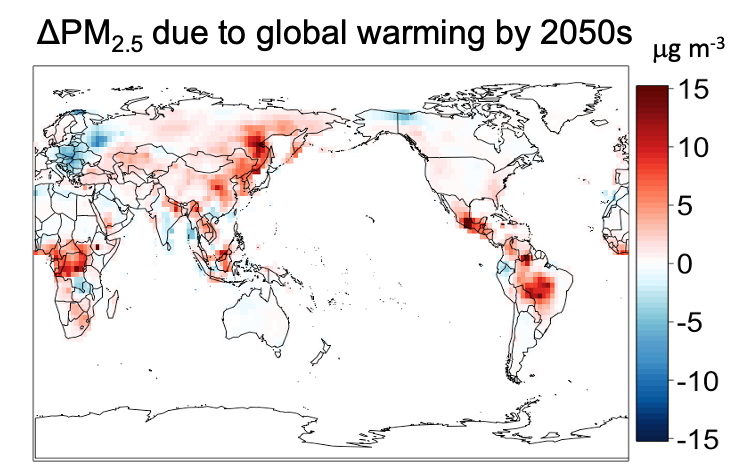
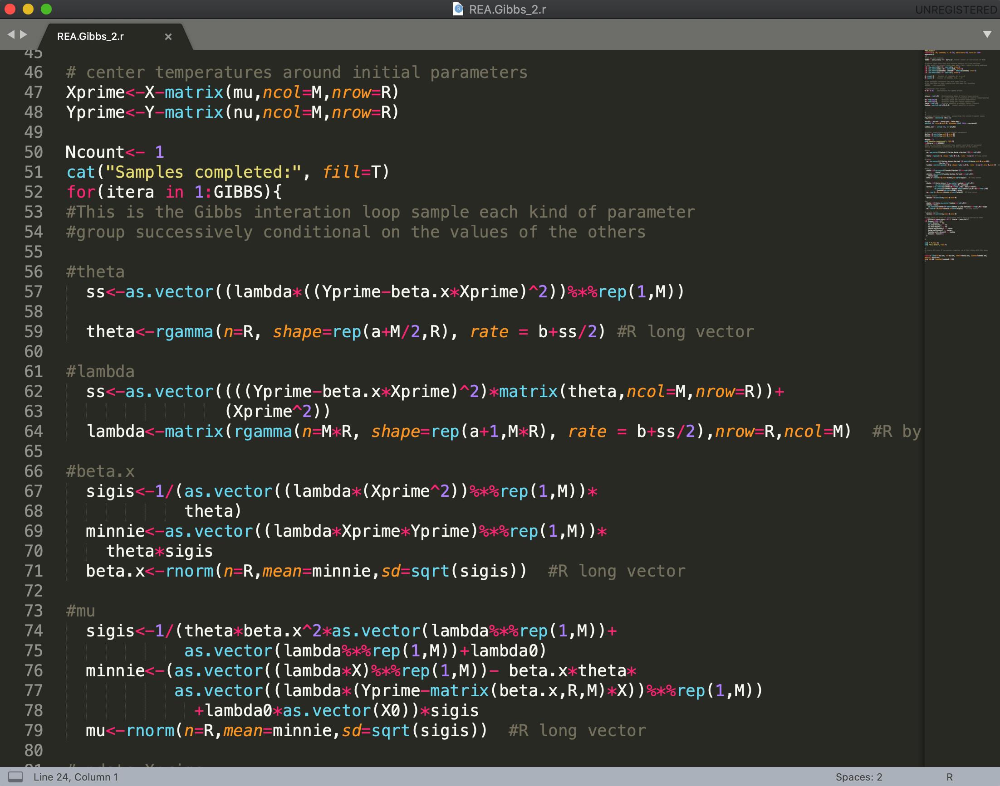

My academic work
Projects and publications
See my research on atmospheric chemistry, chemistry-climate interactions, and my current research of physics of dust emissions.
Hi, I'm Danny Leung. Danny is my English name and Min is my legal name. This is a beta version of my personal website built from whatever I decide to post online. This is a place for me to share about who I am, my research, resources, and some of my teaching materials made in my academic life. I have a Ph.D. in atmospheric science, and I mostly work on atmospheric chemistry and aerosol modeling. I also play the piano, do Brazillian Jiu-Jitsu, cook, and travel.
I am currently a scientist at the NSF National Center for Atmospheric Research (NCAR). I work in the Atmospheric Chemistry Observations and Modeling (ACOM) Laboartory. I got my Ph.D. in the Department of Atmospheric and Oceanic Sciences at the University of California, Los Angeles (with Jasper Kok). I graduated from the Earth System Science Programme at The Chinese University of Hong Kong as an B.Sc. and M.Phil. (with Amos Tai).

My academic work
See my research on atmospheric chemistry, chemistry-climate interactions, and my current research of physics of dust emissions.
Daily life science
A layman introduction of my work on how weather is related to air quality. This is how I talk research to my relatives. Hmm, still hard to follow?

Education
I gather a collection of teaching materials, including lectures and workshops (with codes) on atmospheric science as well as other subjects here.

Open source code
My codes for research, lectures and this website. This link goes back to my github page where most of my codes and repos reside in.